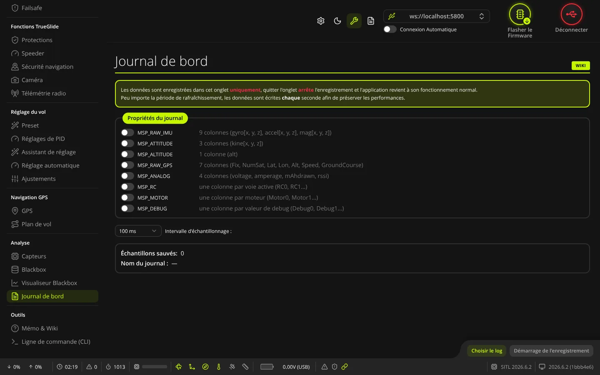
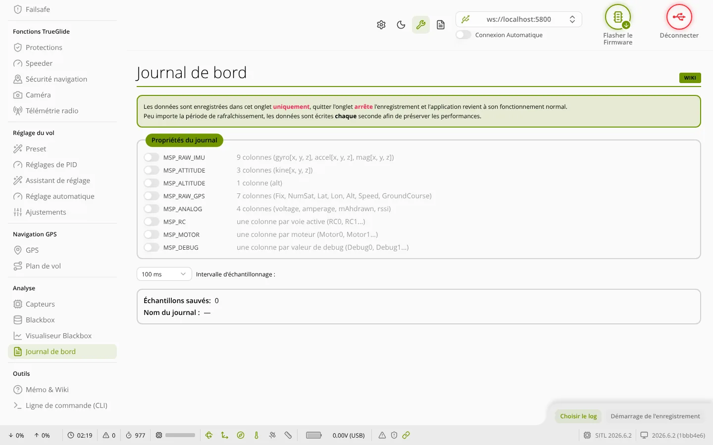

TRUE
TRUEJournal de bord
L'onglet Journal de bord (groupe « Analyse ») sert à enregistrer sur l'ordinateur, dans un fichier CSV, des valeurs lues en direct sur la carte branchée en USB : capteurs, attitude, batterie, voies radio, moteurs.


Où le trouver
Cet onglet n'apparaît dans le menu qu'en mode Expert. Il ne remplace pas la Blackbox : les valeurs passent par la liaison USB, à la cadence choisie ici (10 ms au plus vite), bien plus lentement que la boucle de vol. Pour analyser un vol, utilisez la Blackbox.
Comment il fonctionne
- L'enregistrement ne tourne que tant que l'onglet reste ouvert. Changer d'onglet arrête l'enregistrement et ferme le fichier.
- Quelle que soit la cadence choisie, les lignes sont écrites dans le fichier une fois par seconde.
Propriétés du journal
Chaque interrupteur ajoute des colonnes au fichier. À côté de chaque interrupteur, l'onglet indique les colonnes écrites (par exemple « 9 colonnes (gyro[x, y, z], accel[x, y, z], mag[x, y, z]) » ou « une colonne par moteur (Motor0, Motor1…) »).
| Propriété | Colonnes écrites |
|---|---|
| MSP_RAW_IMU | 9 : gyroscope X, Y, Z ; accéléromètre X, Y, Z ; magnétomètre X, Y, Z |
| MSP_ATTITUDE | 3 : attitude X, Y, Z (kinematicsX à Z) |
| MSP_ALTITUDE | 1 : altitude |
| MSP_RAW_GPS | 7 : fix, nombre de satellites, latitude et longitude (en degrés), altitude, vitesse, cap sol |
| MSP_ANALOG | 4 : tension, courant, mAh consommés, RSSI |
| MSP_RC | une colonne par voie radio active (RC0, RC1…) |
| MSP_MOTOR | une colonne par sortie moteur (Motor0 à Motor7) |
| MSP_DEBUG | une colonne par valeur debug (Debug0…) ; leur sens dépend du mode debug choisi dans l'onglet Blackbox |
La première colonne, timestamp, est l'heure de l'ordinateur en millisecondes.
Réglages et compteurs
- Intervalle d'échantillonnage : temps entre deux lectures, de 10 ms à 5000 ms (100 ms par défaut).
- Échantillons sauvés : nombre de lignes déjà écrites dans le fichier.
- Nom du journal : nom du fichier choisi.
Les interrupteurs et l'intervalle sont bloqués pendant l'enregistrement.
Enregistrer
- Activez au moins une propriété.
- Choisissez l'Intervalle d'échantillonnage.
- Cliquez sur Choisir le log et indiquez où créer le fichier
.csv(nom proposé : carte, nom du drone, date et heure). - Cliquez sur Démarrage de l'enregistrement. Le bouton devient Arrêt de l'enregistrement.
- Cliquez sur Arrêt de l'enregistrement pour finir : les dernières lignes sont écrites et le fichier est fermé.
Sans fichier choisi, sans propriété cochée ou sans carte connectée, le logiciel affiche un message d'erreur et ne démarre pas.